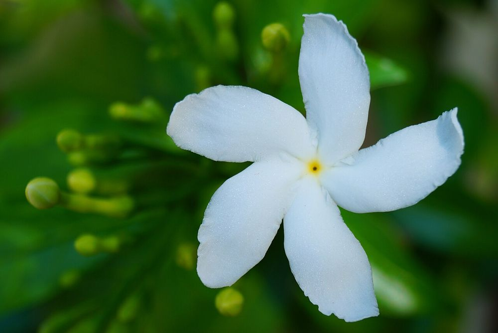

⚠️ எச்சரிக்கைக் குறிப்பு:
இச்செடியின் பால் நச்சுத்தன்மை உடையது; தோல், கண்களில் பட்டால் எரிச்சல் ஏற்படும். வீட்டு மருத்துவத்துக்குப் பயன்படுத்தக் கூடாது. (பூஜைக்குப் பூ பறித்த பின் கைகளைக் கழுவவும்.)
🤍 நந்தியாவட்டம் – உங்களுக்குத் தெரியுமா?
1சிவபூஜைக்கு உகந்த பூ
தூய வெண்மையான நந்தியாவட்டைப் பூ, சிவன் கோயில்களில் பூஜைக்கு மிக உகந்த மலராகக் கருதப்படுகிறது.
2சுழலும் காற்றாடி வடிவம்
இதன் ஐந்து இதழ்களும் ஒரே திசையில் சுழன்று, காற்றாடி (Pinwheel) போலத் தோற்றமளிக்கும். அடுக்கு இதழ் வகையும் உண்டு.
3ஆண்டு முழுவதும் பூக்கும் செடி
பளபளப்பான கரும்பச்சை இலைகளுடன் ஏறக்குறைய ஆண்டு முழுவதும் பூக்கும். ஒரு சிறு கிளையை நட்டாலே எளிதாக வளரும்.
இந்தத் தகவல் பயனுள்ளதாக இருந்ததா?